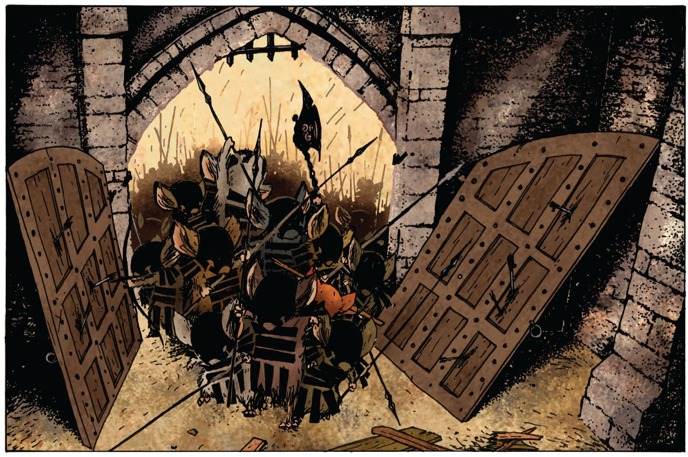
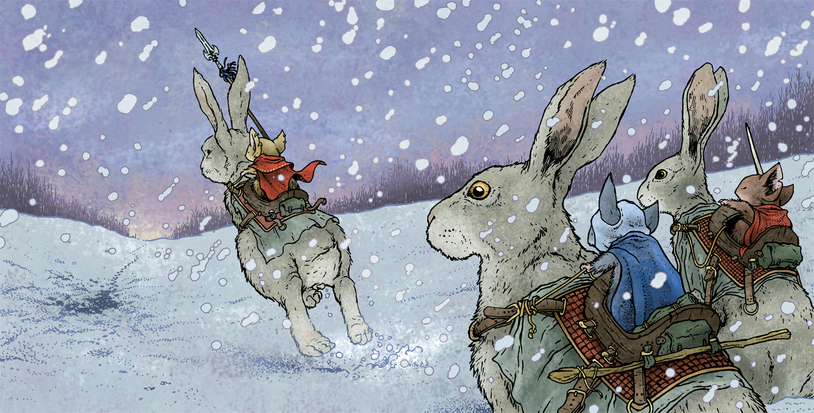
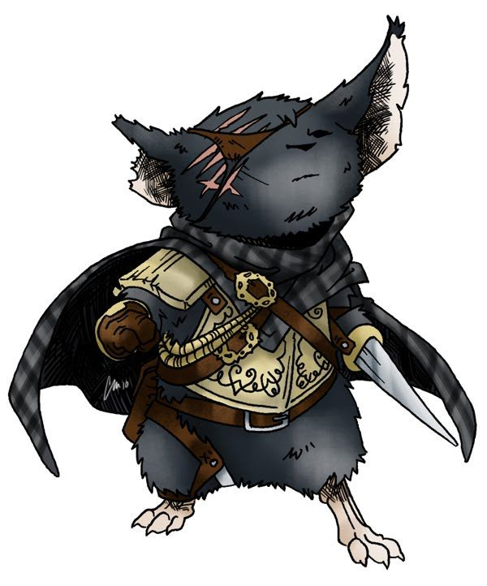

Mouse Guard - Cosas y mecánicas extra
Table of Contents
Habilidades
Pícaro
Un pícaro se dedica a los trucos de cartas, juegos de manos, carterismo u otro tipo de juegos sucios.
Los pícaros pueden usar artilugios creados por herreros o disfraces hechos por tejedores como suministros.
- (La aptitud base de Pícaro es la Salud.)
Factores para Pícaro
[…]
Sugerencias de ayuda para Pícaro
Persuasivo, Embaucador y los Conocimientos apropiados.
Artista
Los artistas se dedican a la creación de piezas y obras que reflejan cierto significado o aptitud. Esta habilidad engloba la poesía, escultura, pintura, artes escénicas y música.
Los artistas pueden usar herramientas hechas por herreros o carpinteros como suministros.
- (La aptitud base de Artista es la Voluntad.)
Factores para Artista
Complejidad: Sencilla, Moderada, Complicada, Abrumadora, Obra maestra
Sugerencias de ayuda para Artista
Los Conocimientos apropiados.
Matemático
Los matemáticos se dedican al cálculo, análisis y estudio de superfícies, objetos, secuencias, ondas u otro tipo de fenómenos. Su oficio es extremadamente versátil, ya que las matemátiacs se aplican en todas las ciencias.
- (La aptitud base de Artista es la Voluntad.)
- (Se puede usar Matemático para ayudar a las habilidades Administrador, Científico y Cartógrafo.)
Factores para Matemático
[…]
Sugerencias de ayuda para Matemático
Científico y los Conocimientos apropiados.
Rasgos
Cobarde
Los ratones cobardes no hacen apuestas ni compromisos de gran importancia, lo que les evita muchas situaciones complicadas y dolores de cabeza. Sim embargo, tal reputación puede alejar a aquellos que confían en ti o a los necesitados.
Sádico
Un ratón sádico siente atracción por el sufrimiento y la humillación de otros, y procura hurdir situaciones para que tomen ese camino. La situación se complica en un ambiente social regido por el respeto, como un juzgado o una corte.
Apático
Un ratón apático no se deja llevar por las emociones, sean propias o de otros. Esto les evita ser convencidos con facilidad, pero su gran falta de consideración puede volverlos solitarios y distantes.
Adicto
Los padres de los jóvenes ratones les advierten de ciertas plantas con efectos adictivos. Este ratón sucumbió a alguna. Siente gran relajación después de consumirla, pero su humor cambiará si pasa mucho tiempo sin tenerla cerca.
Torpe
Dicen que el fallo es un paso natural en el aprendizaje, pero este ratón es el colmo. Hace falta que un ratón torpe memorize cada paso del camino para no cometer una imprudencia, pero la sabiduría de mil tropiezos suele ser de ayuda.
Sensible
Comprender las emociones y los detalles de otros es el punto fuerte de un ratón sensible. Sin embargo, esta gran influencia de los demás suele hacer que los problemas de otros se conviertan en los propios.
Paranoico
Para los ratones paranoicos, el peligro acecha en cada esquina. Siempre revisan y se aseguran que todo sea lo que debe ser. Esto puede evitar sorpresas desagradables, pero tal obsesión suele ser una molesta pérdida de tiempo.
Crédulo
Un ratón crédulo tomará como cierta cualquier historia o consejo que se le plantee. Su inocencia les hace aprender con facilidad, y por el camino caer en grandes embustes.
Elegante
Los ratones elegantes se preocupan por cosas como el perfume que se pondrán al salir o si la ropa que llevan conjunta con su sombrero. Esto puede causar una buena impresión a algunos, pero también atraer malas miradas en el lugar equivocado.
Condiciones
Cambios y adiciones
Hambriento/Sediento
- Estar Hambriento/Sediento conlleva substraer 1 de la disposición de cualquier conflicto.
- Para recuperarse de estar Hambriento/Sediento debe consumir algo de comida y bebida cuando haya un tiempo para descansar.
Enfadado
- Estar Enfadado conlleva substraer 1 de la disposición de cualquier conflicto que use Voluntad como base.
- Para recuperarse de estar Enfadado se debe superar una prueba de Voluntad Ob 2.
Cansado
- Estar Cansado conlleva substraer 1 de la disposición de cualquier conflicto.
- Para recuperarse de estar Cansado se debe superar una prueba de Salud Ob 3. Aumenta el obstáculo en 1 si en el turno anterior usaste un Escudo o Armadura pesada (aumenta en 2 si se han dado ambos).
Asustado
- Estar Asustado implica no poder ofrecer ayuda ni poder usar la Suerte del Principiante (se puede usar Naturaleza en lugar de la habilidad de la prueba).
- Para recuperarse de estar Asustado se debe superar una prueba de Voluntad Ob 3.
Herido
- Estar Herido conlleva substraer 1 de la disposición de cualquier conflicto, además de restar 1D de cualquier prueba de Naturaleza, Salud, Voluntad o habilidades (no se aplica a las pruebas para recuperarse de condiciones).
- Para recuperarse de estar Herido se debe superar una prueba de Salud Ob 4. Un sanador puede eliminar esta condición si supera una prueba de Sanador Ob 3.
- Opcionalmente, si se prescinde de la atención de un sanador (o si éste falla la prueba), se puede eliminar la condición de Herido y sufrir una herida permanente (reduce permanentemente en 1 la Naturaleza, Salud, o una habilidad que tenga como base Salud).
Enfermo
- Estar Enfermo conlleva substraer 1 de la disposición de cualquier conflicto, además de restar 1D de cualquier prueba de Naturaleza, Salud, Voluntad o habilidades (no se aplica a las pruebas para recuperarse de condiciones). Mientras esté enfermo, un ratón no podrá avanzar ni mejorar sus habilidades ni aptitudes.
- Para recuperarse de estar Enfermo se debe superar una prueba de Voluntad Ob 4. Un sanador puede eliminar esta condición si supera una prueba de Sanador Ob 3.
- Opcionalmente, si se prescinde de la atención de un sanador (o si éste falla la prueba), se puede eliminar la condición de Enfermo y sufrir una herida permanente (reduce permanentemente en 1 la Naturaleza, Voluntad, o una habilidad que tenga como base Voluntad).
Orden de recuperación
El nuevo orden de recuperación de las condiciones es:
Hambriento/Sediento -> Enfadado -> Asustado -> Cansado -> Herido.
[WIP] Atributos
Acero
El Acero es un atributo que representa los nervios de tu personaje. Su valor oscila entre 1 y 6. Se pone a prueba cuando quedas conmocionado o sorprendido en situaciones que requieren actuar sin vacilar, y su resultado indica si retrocedes o tus nervios de acero te ayudan a seguir tu camino. La sorpresa, el dolor, el miedo y el asombro pueden provocar pruebas de Acero. Todo personaje empieza con un valor inicial de Acero de acuerdo a su rango.
| Rango | Acero inicial |
|---|---|
| Zarpa tierna | 2 |
| Guardián | 3 |
| Guardián de patrulla | 3 |
| Líder de patrulla | 4 |
| Capitán de guardia | 4 |
Además, debe responder a las siguientes preguntas para ver si éste fluctúa:
¿Ha sido educado en un entorno competitivo?
- Incrementa tu Acero en 1 si la respuesta es sí.
¿Ha matado o asesinado con sus propias manos?
- Aumenta en 1 tu Acero si lo has hecho más de una vez. No puedes escoger el rasgo Compasivo.
¿Ha vivido una vida libre de violencia y dolor?
- Si es así, reduce tu Acero en 1.
Combate en profundidad
Cuando la abstracción de un Conflicto no es suficiente para un combate emocionante, se puede optar por las reglas de Combate en profundidad para seguir la acción más de cerca. Los pasos a seguir son los siguientes:
1. Decidir participantes
Primero se deciden los participantes del combate. Si se está usando un tablero, este es el momento de posicionarse.
2. Declarar objetivos
Una vez decidido quién participa, cada uno escoge un objetivo. Puede ser algo como eliminar a los arqueros enemigos, despejar la entrada de la fortaleza, o algo que se pueda cumplir durante la lucha.
3. Generar disposiciones iniciales
Cada participante genera su disposición para el combate. Se usa Salud como base y se le añade el resultado de una prueba se Luchador Ob 0 (o Cazador u otra habilidad si es contra un animal salvaje o algo diferente). Se aplican las desventajas apropiadas, como si fuera un conflicto.
4. Elegir las acciones
A partir de aquí, en cada ronda cada participante elige individualmente (y en secreto) una única acción y contra quién se efectua dicha acción.
5. Resolver las acciones
Cuando todos han decidido las acciones de la ronda, se resuelven como si fuera un conflicto. Una vez resueltas, se eligen nuevas para la siguiente ronda, y así sucesivamente hasta que el combate haya finalizado.
6. ¿Fin del combate?
El combate finaliza cuando se da alguno de los siguientes casos:
- Todos los objetivos han sido resueltos
- No queden objetivos opuestos sin resolver
- No quedan disposiciones superiores a 0.

Otra posible manera
Una implementación posible de Combates en profundidad ciñéndose más a las reglas originales sería considerar cada participante como un equipo individual, y con voleas de 1 única acción.
Aclaraciones
Si se usa un tablero cuadriculado para una experiencia más inmersiva de combate, se puede considerar que cada casilla referencia aproximadamente a una superfície de 20x20 centímetros.
Movimiento
Un ratón se puede mover tantas casillas en una ronda como Naturaleza tenga. Es decir, un ratón con Naturaleza 5 podría moverse hasta 5 casillas en una única ronda. El mínimo número de casillas que un personaje o criatura puede moverse es 1, siempre y cuendo no esté inconsciente ni incapacitado de algún modo.
El resto de animales también se mueve tanto como Naturaleza tanga. Si el animal es volador y camina sobre tierra, este usa la mitad de su Naturaleza para sus movimientos. Si se cabalaga una montura, se usa la Naturaleza de esta.
Si un personaje está Herido y/o Enfermo, las casillas que es capaz de moverse en una ronda disminuye en 2. Si está Gravemente herido, se reduce en 4.

Rango
Las armas arrojadizas o de proyectiles con las que se pretenda atacar a algo más lejano al número de casillas descritas arriba deberá aplicar una desventaja según la distancia.
- Normal: 1 casilla.
- Lanza: hasta 2 casillas.
- Arrojadiza: hasta 4 casillas.
hasta 1 casillas más: -1D.
hasta 2 casillas más: -2D. - Proyectil: hasta 12 casillas.
hasta 4 casillas más: -1D.
hasta 8 casillas más: -2D.
Heridas terribles
Además de la condición Herido, se añade la de Gravemente herido. Esta, en vez de una desventaja de -1D a las pruebas de Naturaleza, Salud, Voluntad y Habilidades, aplica una de -2D, y adicionalmente impide el avance y mejora de aptitudes y habilidades mientras dure.
Un personaje puede quedar Gravemente herido como resultado de un conflicto con un compromiso considerablemente grande, o bien al fallar una prueba peligrosa y ya estaba Herido, por ejemplo.
Las heridas graves no pueden ser recuperadas en solitario: se requiere la ayuda de un sanador, el cual debe superar una prueba de Sanador Ob 5 para eliminar la condición. Sin embargo, puede seguir eliminándola a coste de daños permanentes, como:
- Pérdida de 1 punto de dos aptitudes o habilidades diferentes.
- Pérdida de 1 punto de una aptitud o habilidad y pérdida de 1 punto, eliminación o cambio de un rasgo.

Alojando éxitos
Las tiradas exitosas se pueden mejorar alojando éxitos sobrantes. Cualquier éxito obtenido por encima del objetivo de la prueba se puede alojar en:
- Aumentar un poco su calidad.
- Realizarlo algo más rápidamente.
- Embellecer su realización.
Cuantos más éxitos se alojen, más mejoras se pueden lograr.